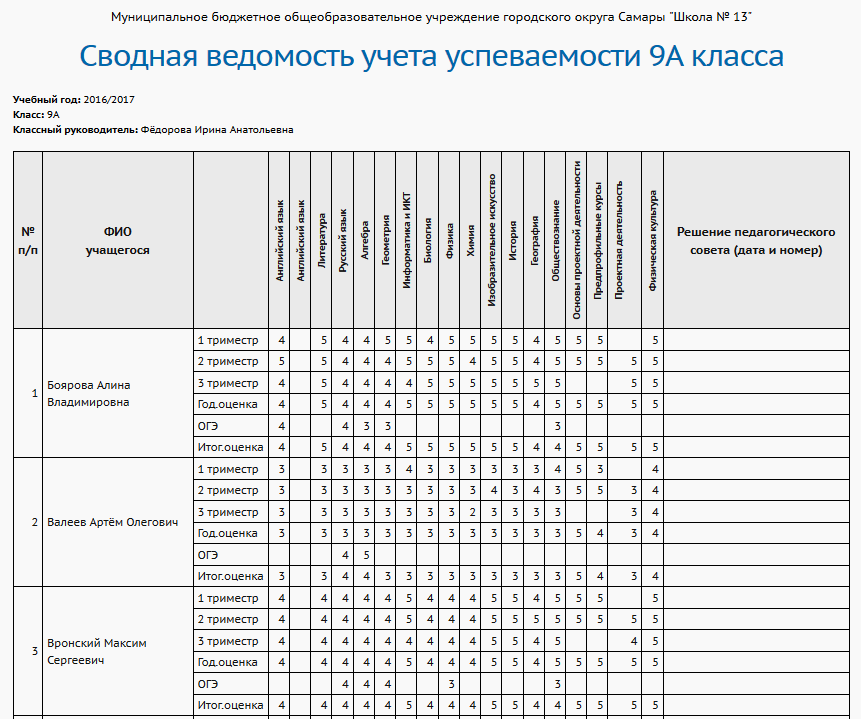

|
Сводная ведомость учета успеваемости
|
| 1. Отформатируйте названия предметов так, чтобы они располагались по вертикали.
|
| 2. Заполните графу "Решение педсовета" (данная графа не заполняется автоматически).
|
| 3. Распечатайте отчёт средствами вашего табличного редактора.
|
